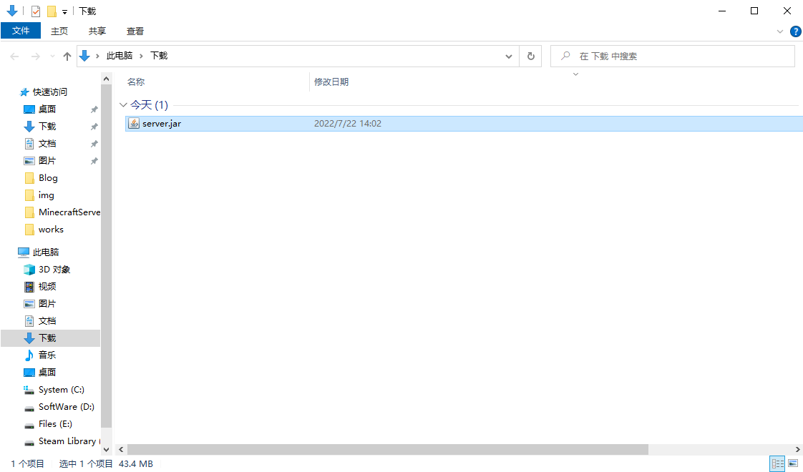
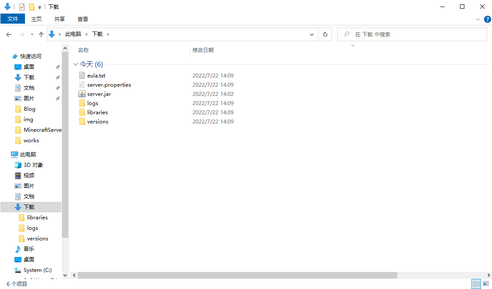
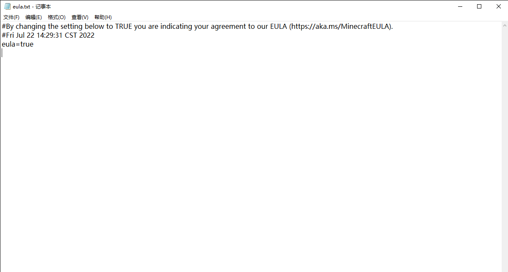
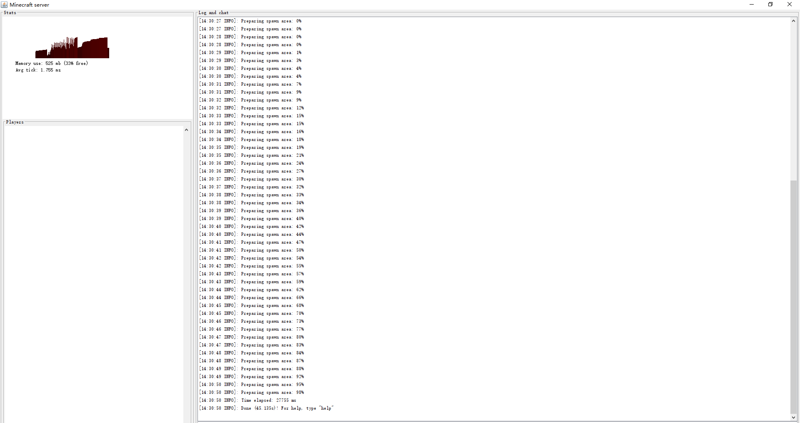

Pay Attention
This article applies only to the Java Editer version of Minecraft Server Core
If you're looking for a version of Bedrock Editer Minecraft Server Core, head to Minecrtaft Bedrock Editer for tutorials
Make sure that java is installed and that JAVA_HOME variable already exists in the PATH variable, if not, see Java PATH setting
Make sure you have installed the NetPlus mapping software and completed the configuration,if not, see the NetPlus tutorial
Official Website
Software Download : Minecraft-Servers 1.19.jar
Minecraft-Servers Official Website
Use the tutorial
1. Download minecraft-Servers.jar file and double-click to run it once(You need to place the server .jar file in the English-only path first, it is best to create a new folder.I will not be presented here to save the length of the article)
2.After running, the server .jar file creates many sub-files in the directory
3.Click user agreement (eula.txt) and change the last line of "eula=false" to "eula=true" to save and close the file
5.After running server.jar file, a window will open, and when you see "Done XXX s", it means that the server is successfully opened(The first boot may load slowly, please be patient)
6.After the server is successfully started, use NetPlus mapping software to penetrate (Minecraft-Server default intranet port is 25565),See NetPlus-Setting
More
More versions of Server Core